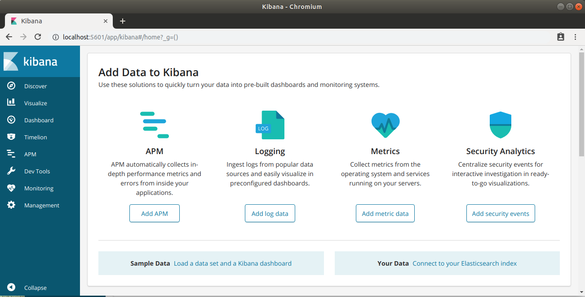

We are going to install Elasticsearch v6.x and Kibana v6.x. This is (at least for me) the core parts of the “Elastic Stack”.
The easiest way to get an Elasticsearch host setup locally is to install it on a virtual machine using Vagrant.
Create a repository for your Vagrant project and cd into it. I have called mine `elasticsearch-getting-started`.
To initialise a Ubuntu 16.04 box run the following:
$ mkdir elasticsearch-getting-started && cd elasticsearch-getting-started
$ vagrant init ubuntu/xenial64
If you don't have Vagrant installed check out this post for instructions.
Initialising the vagrant project will create a default file in the root of your project called `VagrantFile`. We need to make some manual edits to the generated VagrantFile to tell Vagrant where to find our provisioning script and to forward ports for Elasticsearch and Kibana to the host machine so we can access them in the browser.
Open `VagrantFile` in your favourite editor and add the following inside the Vagrant.configure block to point vagrant to a provisioning script.
The provisioning script is called by Vagrant after the box is spun up for the first time. It will take care of the installation of all the required software and changing some configuration.
Next, add the following to forward the ports 9200 (Elasticsearch) and 5601 (Kibana) to your host:
Next the provisioning script itself bootstrap.sh. The responsiblility of the provisioning script is
to install the required software onto the virtual machine and to setup any configuration required. We are going
to install Elasticsearch and its dependancies as well as Kibana. You can read more about Kibana here. In short, Kibana is to
Elasticsearch what PhpMyAdmin is to MySQL.
The first step it to install the Oracle JDK. The Elasticsearch documentation for version 6.x recommends the Oracle JDK version 1.8.0_131. To install the JDK we first need to grab the PPA from Oracle and update the license acceptance flags. Once this is done we can use the installer and set the environment path.
Once the Elasticsearch dependencies are properly installed the next step is to add the Elasticsearch repository definition to the apt sources list. This requires the `apt-transport-https` package to be installed. Once this is done we can add the repository definition and install both Elasticsearch and Kibana.
Now everything is installed its time to tweak some configuration. First off we need to give ownership of the Elasticsearch install directory to the ES group and user `elasticsearch:elasticsearch` and allow access to both from the host machine, so we can view both in the browser.
Now everything is installed and properly configured the next step is to start both Elasticsearch and Kibana.
If everything is up and running as expected you will be able to find Elasticsearch at http://localhost:9200 and Kibana at http://localhost:5601.
A working Elasticsearch will return a JSON in your browser that looks a lot like this:
And Kibana should load up and look something like this:
And that is everything all set. Further posts to follow about how to query ES and how to avoid some of the gotchas.